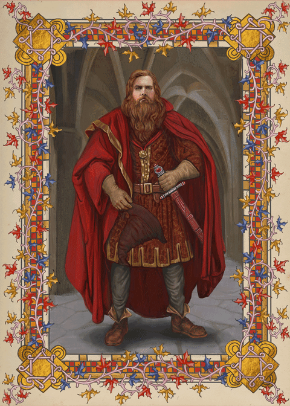
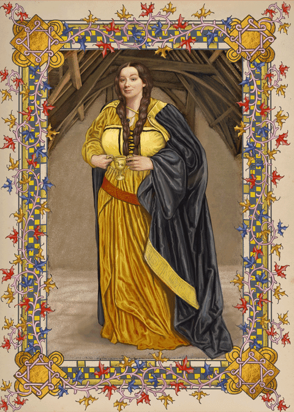
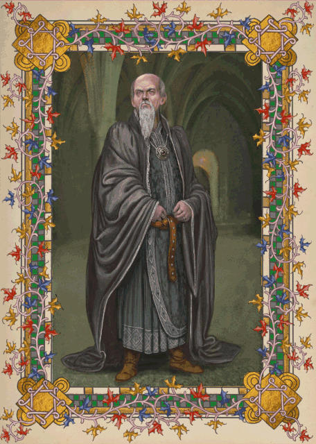

HISTORIA MÁGICA
El Colegio Hogwarts de Magia y Hechicería fue fundado hace mil años por cuatro de los más brillantes magos y brujas de la época: Godric Gryffindor, Helga Hufflepuff, Rowena Ravenclaw y Salazar Slytherin. Se sentaron las bases para la única escuela de magos en Gran Bretaña, Hogwarts.
GODRIC GRYFFINDOR
El fundador de la casa de Gryffindor. Un hombre justo, que creía que cualquier niño que mostrara habilidades mágicas antes de los 11 años debía ser capaz de asistir a Hogwarts. Él elegía como miembros de su casa a aquellos que demostraban valor, coraje y valentía.
HELGA HUFFLEPUFF
La fundadora de la casa Hufflepuff. Era una mujer amable y cálida. Los valores que una persona debe poseer para ser ordenados en la casa Hufflepuff son los de lealtad, paciencia y trabajo duro por encima de todo. También se sabe que dio a los elfos domésticos trabajo en Hogwarts.
ROWENA RAVENCLAW

La fundadora de la casa Ravenclaw, ella era una mujer fuerte e inteligente. El intelecto es un activo muy valioso para los estudiantes de la casa Ravenclaw. Debido a esto, Rowena quería hacer la de Hogwarts una de las finas en la tierra, enseñando a los niños con la más alta inteligencia.
SALAZAR SLYTHERIN
El fundador de la casa de Slytherin. Un hombre astuto, no se diferencia de muchos de los estudiantes que llevó a su casa. Él creía firmemente que los magos sólo de sangre pura se debe permitir a asistir a Hogwarts.